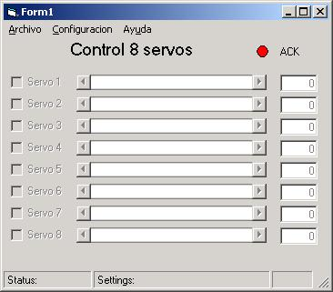
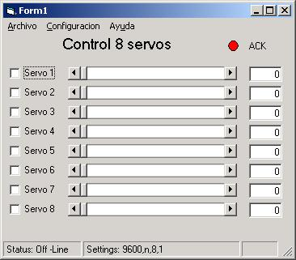
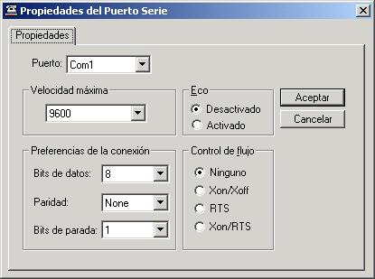
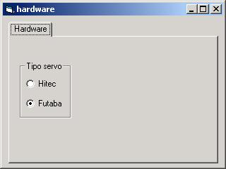

|
STAR-SERVOS8: CONTROL DE
SERVOS DESDE EL PC (Versión Windows) |
|

|
- Nombre: star-servos8
- Servicio: Cliente para el
Stargate
servos8
- Lenguaje: Visual Basic
- Plataforma: Windows
- Tipo: Convencional
- Descripción: Control de servos del tipo Futaba 3003 o
compatibles desde el PC. Movimiento mediante barras deslizantes.
- Aplicaciones: Prototipado rápido de sistemas articulados.
Por ejemplo robots.
|
Introducción
Cuando se
están desarrollando prototipos de robots articulados, como PuchoBot,
Cube
Revolutions o Sheila,
resulta muy útil poder controlar los servos desde el PC, utilizando una
interfaz gráfica. De esta forma se pueden definir secuencias sencillas de
movimiento sin tener que programar ningún microcontrolador y así poder validar
la estructura mecánica o el diseño del robot.
El
programa star-servos8 permite manejar hasta 8 servos del
tipo Futaba 3003 o compatibles. El posicionamiento se puede hacer mediante
barras de desplazamiento.
Esta
aplicación forma parte del proyecto
Stargate, y es un cliente para el servidor servos8.
Características
-
Plataforma: Windows
-
Lenguaje: Visual Basic
-
Licencia: GPL
Conexión de los servos
Los
servos se conectan a una placa con un microcontrolador (Stargate), y
se graba el servidor servos8. Los microcontroladores
soportados actualmente son: PIC16F87X, 68HC11 y 68HC08. El
usuario puede fabricarse su propia placa o bien utilizar alguna de las
siguientes, en las que se ha probado su funcionamiento:
-
Tarjeta
Skypic. La conexión de los servos es inmediata, ya que dispone de
conectores específicos. Se trata de hardware libre y por tanto todos lo
esquemas están disponibles.
-
Tarjeta
CT6811. Para conectar los servos hay que utilizar una plaquita que tenga
conectores de servos por un lado y conector para cable plano de bus por otro.
También es hardware libre.
-
Tarjeta
GPBOT. Hay que construirse también una plaquita de adaptación. Esta placa
NO es hardware libre.
El Stargate se
conecta al PC a través de un cable serie.
Pantallazos
-
|
 |
 |
|
Ventana inicial, que da acceso al
resto de ventanas de control. Permite configurar el dispositivo serie en
el que está conectado el stargate. Muestra en todo comento el
identificador del stargate y el estado de la
conexión. |
En todo momento se está comprobando la conexión con el stargate.
Si se desconecta se
indica. |
-
|
 |
 |
|
Ventana de configuración de los parámetros del puerto de comunicaciones. |
Pantalla de configuración del tipo de servo que usaremos. |
Download
Links
Autores
Licencia
Este programa se distribuye bajo licencia GPL
Noticias
Juan González Gómez
Ricardo Gómez
González
IEA ROBOTICS